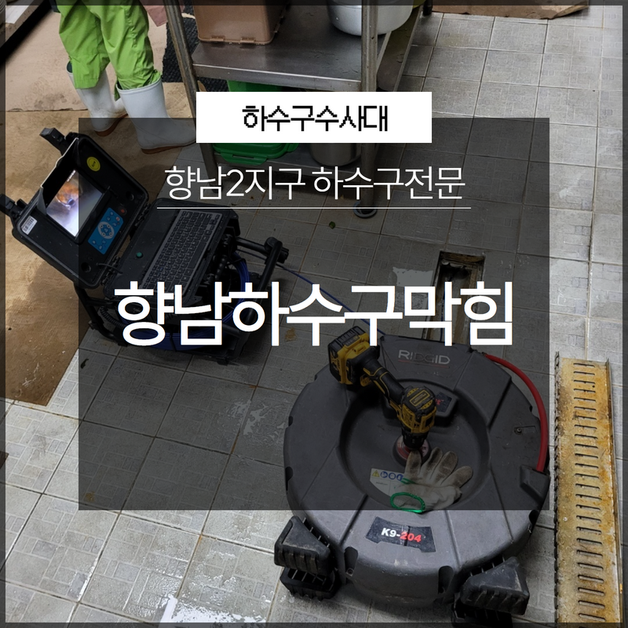
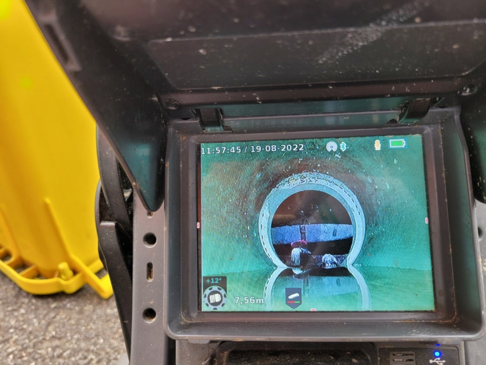
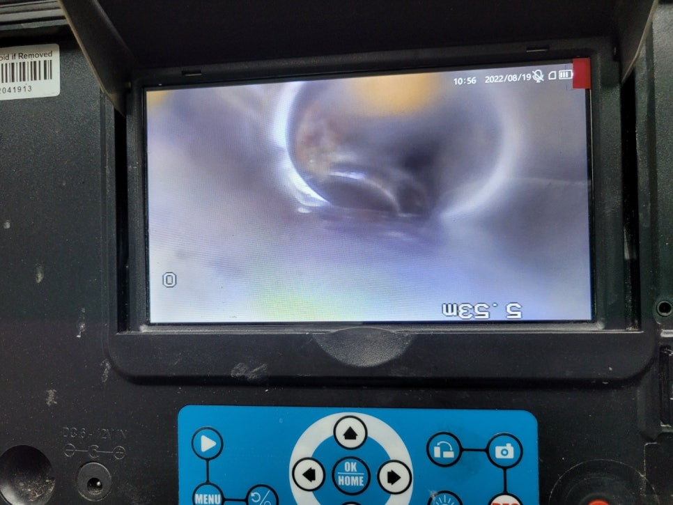
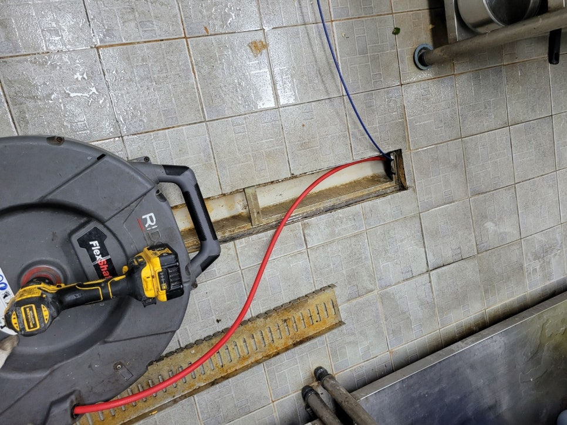
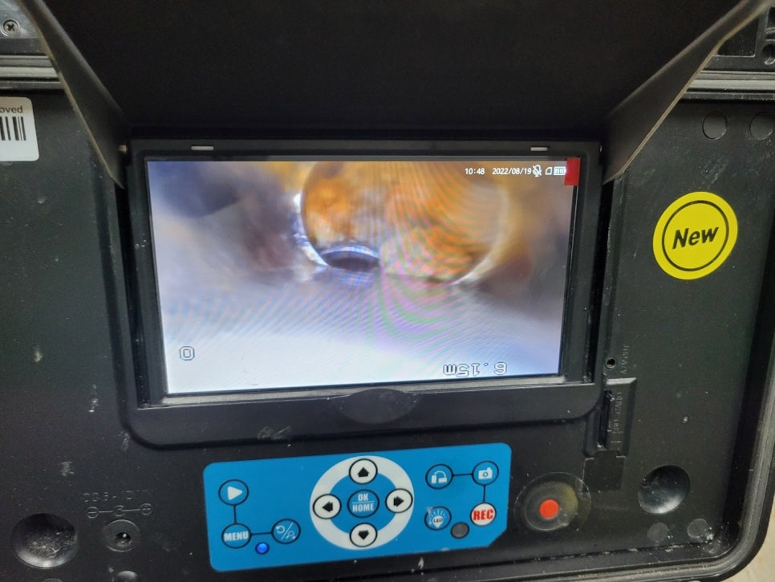
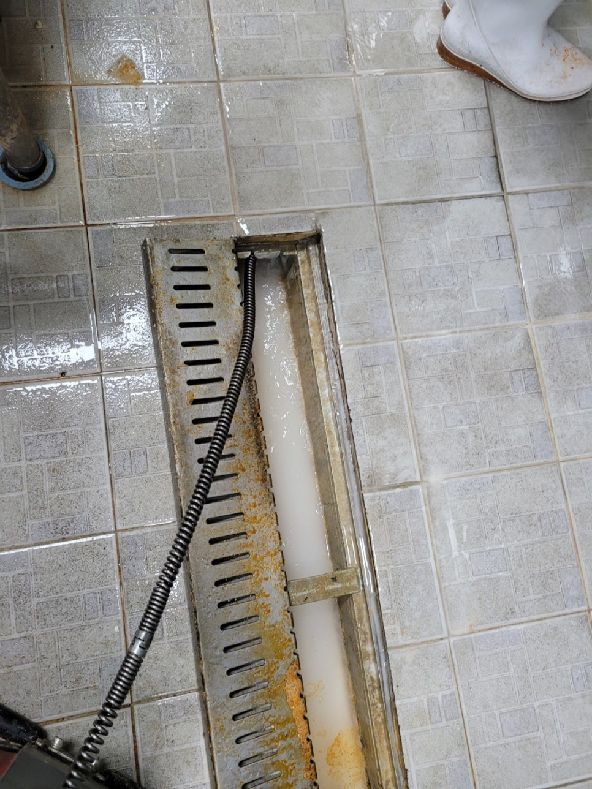

🏠 화성시 향남하수구막힘 향남2지구 하수구전문 불편한 상황에는 빠르게 하수구수사대!
화성 향남 하수구막힘 전문 시공 후기

📋 작업 개요
- 위치: 화성 향남, 향남, 화성
- 서비스 유형: 하수구막힘, 배관막힘, 맨홀막힘, 역류해결, 뚫는업체
- 작업 일시: 2022. 12. 28. 0:51
- 업체명: 하수구수사대 (010-5615-2118)
🔍 문제 상황
안녕하세요 하수구수사대입니다.
하수구막힘이 발생하는 경우에는 여러모로 불편한 상황이 생길 수밖에 없습니다.
이번에 소개를 해드릴 현장은 화성시 향남하수구막힘 향남2지구 하수구전문 의뢰를 해주신 곳으로 한 동네에서 여러 세대가 동시에 하수구막힘이 발생한 곳이었습니다. 하수구수사대는 하수구 문제로 인해서 고민이 되시는 경우에 의뢰를 해주시면 빠르게 달려가서 해결을 해드리고 있습니다.

🔎 원인 분석
💡 전문가 진단: 하수구막힘이 발생하는 경우에는 여러모로 불편한 상황이 생길 수밖에 없습니다.
화성시 향남하수구막힘 향남2지구 하수구전문 현장에 도착을 해보니 도심과는 어느 정도 떨어져 있는 곳으로 얼마 전부터 몇 주 내에 여러 세대에서는 하수구로 물을 흘려내려보냈는데도 좀처럼 내려가지 않는 상황에서 역류가 발생하고 있는 상황이 발생하고 있었습니다. 특히 계절에 따라서 한여름에는 악취를 동반해서 힘든 환경이 될 수 있고 한겨울에는 동파로 인한 위험이 발생할 수도 있는 것입니다.
고객님의 불편함을 해결하기 위해서 발 빠르게 작업에 돌입을 하였습니다.
현장에 있는 일부 사무실과 공장등지에서는 업무가 정상적으로 이루어질 수 없는 상황이었기 때문에 일정을 확인해서 고객님께서 작업을 받아보실 수 있는 날짜와 시간으로 맞춰서 방문을 해드리고 있습니다. 보통 하수구막힘이 발생하게 되면 급한 마음에 직접 해결을 하시려고 여러 가지 방법을 시도해 보는 분들이 많이 있습니다. 하지만 실제로 직접 시도를 해보지만 맘처럼 해결이 쉽지 않은 것을 알 수 있습니다.
그러므로 보다 확실한 해결을 위해서는 결국 전문가의 도움이 필요할 수밖에 없는 것입니다. 보통 일상에서 배수구가 막히게 되는 현상의 경우에는 배관의 상태가 나쁜 경우에 발생을 하는 경우가 많이 있는데요 그러므로 평소에 얼마나 정기적으로 관리를 하느냐가 중요하다고 할 수 있습니다.

🔧 작업 과정
그러므로 혹시라도 하수구를 통해서 물이 내려가지 않게 되는 경우에는 배수관의 상태를 먼저 점검을 하고 진행을 해야 하는 것입니다. 이물질의 양이 많을 때에는 어떻게 뚫어야 하는지를 전문가와 함께 상의를 해보는 것이 좋다고 할 수 있습니다. 이번 화성시 향남하수구막힘 향남2지구 하수구전문 하수구막힘 현장의 경우에는 단순히 외부나 집안에서 노출되어 있는 배관의 문제는 아니라는 것을 알 수 있었습니다.
우선적으로 주변의 세대에서도 동일한 현상을 겪고 있었기 때문인데요 한 세대에서 문제가 발생한 경우에는 그 세대의 배관만 점검을 하면 되지만 이렇게 주변에 있는 많은 세대에서도 동일하게 막힘이 발견되는 경우에는 공동 배관에 문제가 있다는 것을 짐작해 볼 수 있습니다. 이번 현장 같은 경우는 여러 사례 중에서도 고난도의 작업이 필요한 곳이었는데요 맨홀 아래로 내려가서 공용 배관에 있는 이물질을 제거해야 하는 상황이었습니다.
그러므로 이러한 작업은 다양한 노하우와 경험이 있는 전문가를 통해서 진행을 해야 보다 확실한 해결이 가능할 수 있습니다. 저희하수구 수사대에서는 경험이 많은 전문가가 투입이 되기 때문에 신속하고 정확하게 해결을 할 수 있습니다. 맨홀 아래쪽을 배관 내시경을 통해서 확인을 해보니 큰 이물질들이 있는 것을 확인하였습니다.
이물질 때문에 물의 흐름이 좋지 못한 상태였는데요 큰 이물질을 부수는 스프링 작업을 통해서 잘게 부순 후에 석션기로 빨아드리는 작업을 하였습니다. 이물질들을 제거하니 다시 물의 흐름이 좋아지는 것을 확인하였는데요 내시경으로 내부를 다시 확인을 하고 이물질들이 제거가 된 것을 확인한 후에 모든 작업을 마무리하였습니다. 빠른 해결에 고객님의 만족도 또한 컸는데요
이렇게 배관 막힘은 전문 업체를 통해서


✅ 작업 완료
원인 해결이 필요하다고 할 수 있습니다.
경기도 화성시 향남읍 상신하길로298번길 7-11 8층 805호




⚠️ 하수구 배관 막힘 예방 및 관리 가이드
- ✅ 머리카락, 비닐, 물티슈 등 물에 분해되지 않는 이물질은 하수구 유입을 절대 금지해 주세요.
- ✅ 하수구 거름망을 씌우고 모여진 이물질은 주기적으로 쓰레기통에 바로 비워주셔야 합니다.
- ✅ 배관 노후가 심할 경우 이물질이 더 쉽게 걸리므로 주기적인 배관 세척(고압세척 등)을 권장합니다.
- ✅ 작업 후 1년 이내 재발 시 하수구수사대에서 무상 A/S 보증 서비스를 제공합니다.
💡 핵심 정리
- 확실한 장비 작업(내시경 점검 및 샤프트 스케일링)으로 원인을 뿌리 뽑습니다.
- 작업 후 1년 이내에 동일한 부위 재발 시 100% 무상 A/S 서비스를 보장합니다.
- 서울 · 경기 · 인천 전 지역에 24시간 언제든 긴급 출동할 수 있도록 항시 대기 중입니다.
❓ 자주 묻는 질문 (FAQ)
🚨 화성 향남 하수구막힘 문제로 고민이신가요?
정확한 원인 진단과 확실한 시공으로 재발 없는 해결을 약속드립니다.
24시간 긴급 출동 | 서울 · 경기 · 인천 전지역 | 1년 내 재발 시 무상 A/S